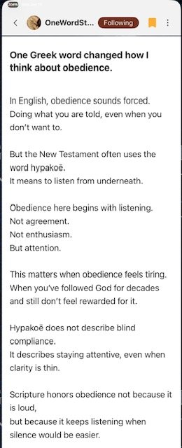
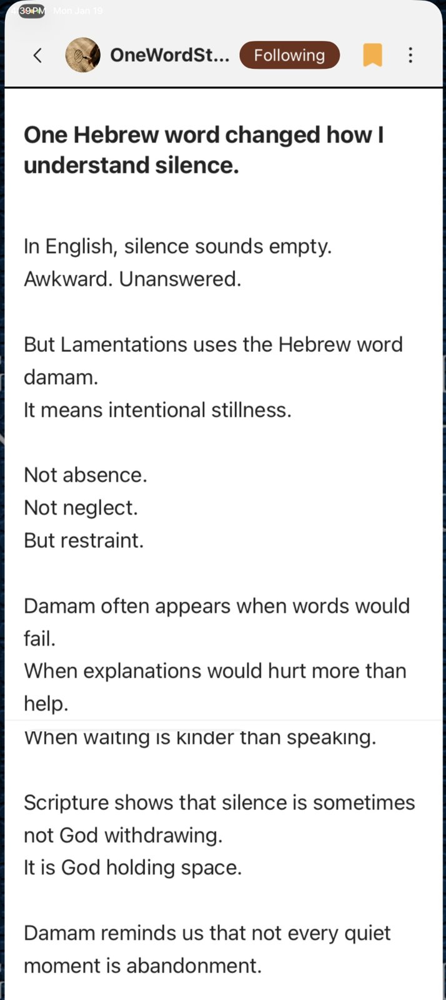
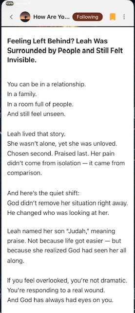
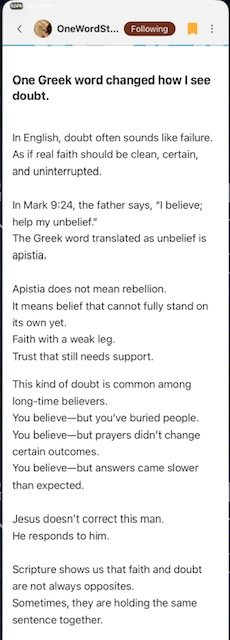
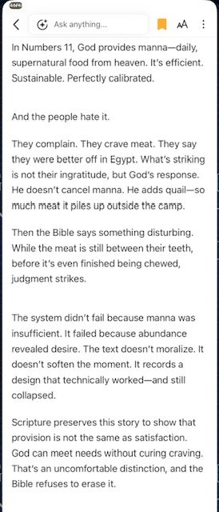
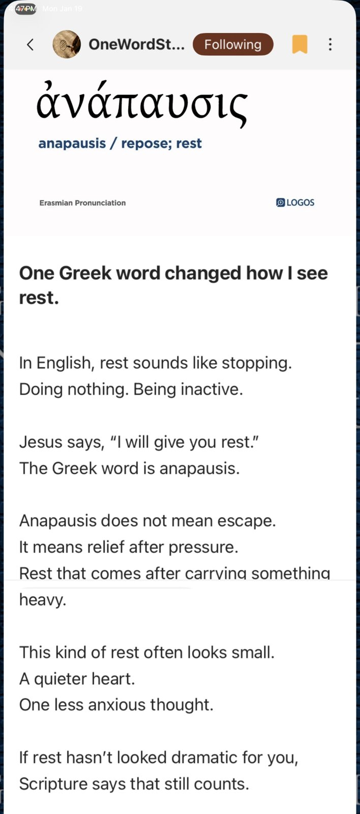

I'm so thankful to live in a time with instant access to more Bible resources than my brain can begin to handle. For the last fifteen years or so it's been my mission to find every valuable tool to help me know God better, on the premise that the more I know Him, the more I'll love Him. After praying for years that my kids would know God more each day, I eventually realized the fuller prayer was: Father, help my children know You more, love You more, and walk closer to You, each day. The “walk closer” part matters because it's not enough to know or love the Lord in the abstract — it's living it out, day by day, in the specific situations of a life that looks different from everyone else's, that makes the knowledge and love actually get absorbed into the heart.
All that to say — I've collected so many apps, websites, AI tools, Bible software, books, sermons, and lectures over the years that if you asked me for “the best one,” I'd honestly struggle to answer. It's a little sad to think all that accumulated knowledge might die with me, but I keep at it anyway. Since my tumor, this has become close to my life's last mission — maybe the one thing I can still do reasonably well.
So I was hesitant to recommend yet another app, but I keep coming back to the Bible Verse of the Day (VOD) app more than almost anything else — maybe because of its simplicity. It only takes five or ten minutes. You can find it at biblevod.com. Here are a few screenshots from recent days:






Comments